Настройка Интернет в системе Windows 7
Для настройки доступа в Интернет на Windows Vista/Windows 7 необходимо: Нажать "Пуск" > "Панель управления"
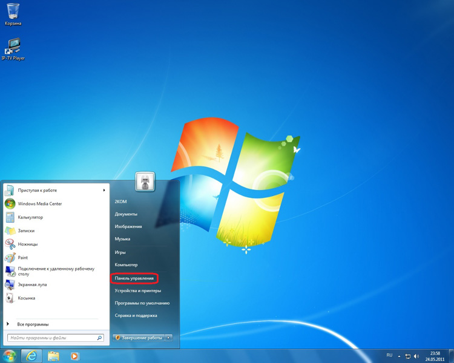
В Панели управления выберите "Сеть и Интернет"
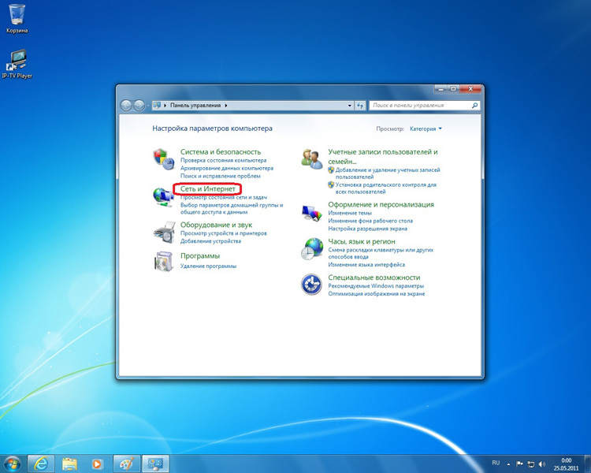
Затем выберите "Центр управления сетями и общим доступом"
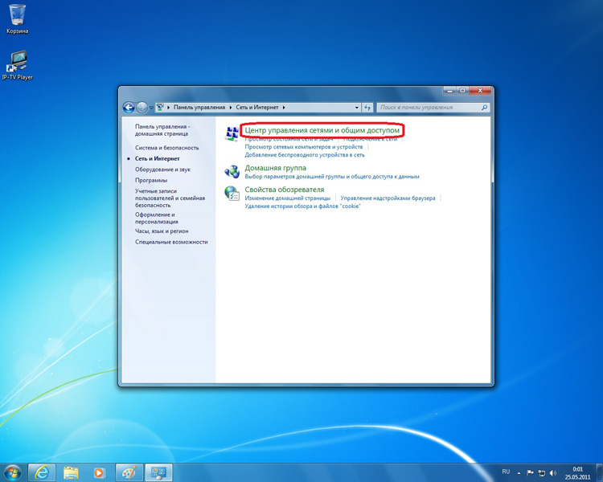
В разделе "Центр управления сетями и общим доступом" выберите "Изменение параметров адаптера"
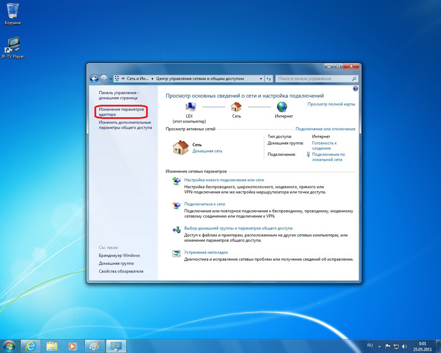
Щелкните правой кнопкой мыши по значку "Подключение по локальной сети" и выберите "Свойства"
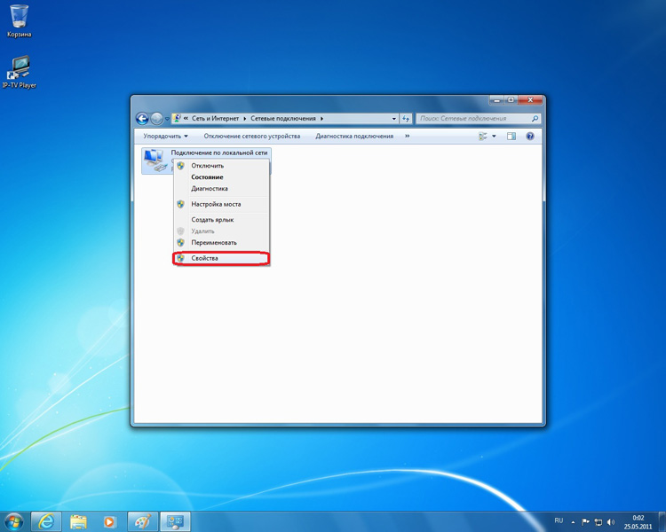
В открывшемся окне "Подключение по локальной сети - свойства" выделите надпись "Протокол интернета версии 4 (TCP/IPv4)", затем нажмите кнопку "Свойства"
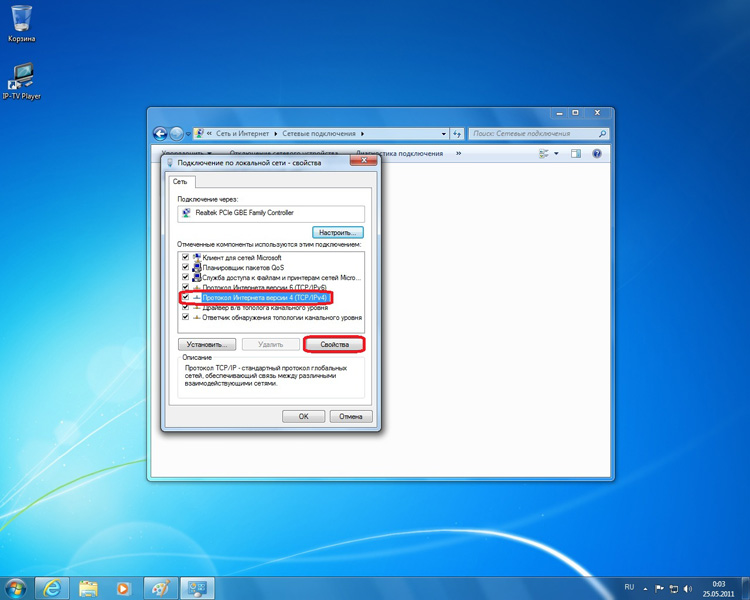
В открывшемся окне "Свойства: протокол интернета версии 4 (TCP/IPv4)" поставьте точки "Получить IP-адрес автоматически" и "Получить адрес DNS-сервера автоматически". Затем нажмите "ОК" и в предыдущем окне "Подключение по локальной сети - свойства" тоже нажмите "ОК"
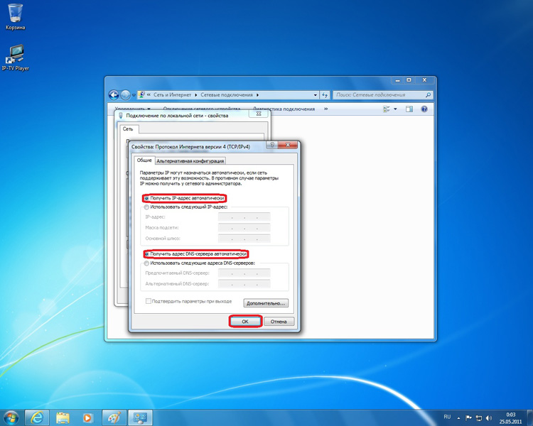
В Центре управления сетями и общим доступом нажмите "Настройка нового подключения или сети".
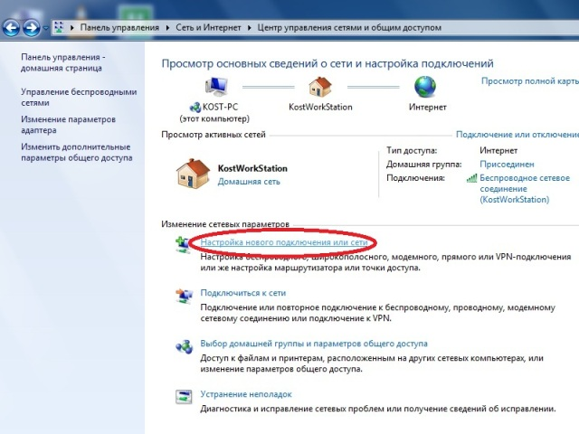
Выберите "Подключение к рабочему месту", нажмите "Далее".
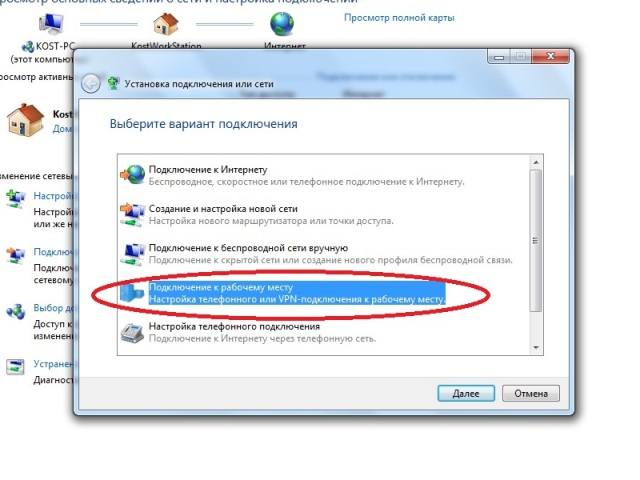
Выберите "Использовать мое подключение к Интернету (VPN)".
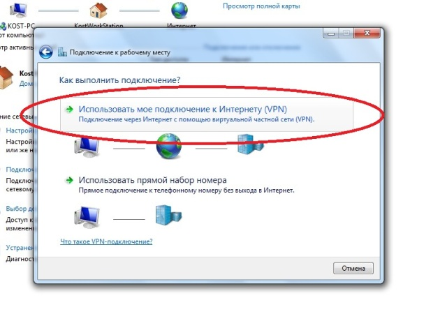
Если у вас уже созданы подключения, мастер задаст вопрос про настройку подключения к Интернет. Необходимо выбрать "Отложить настройку подключения к Интернету"
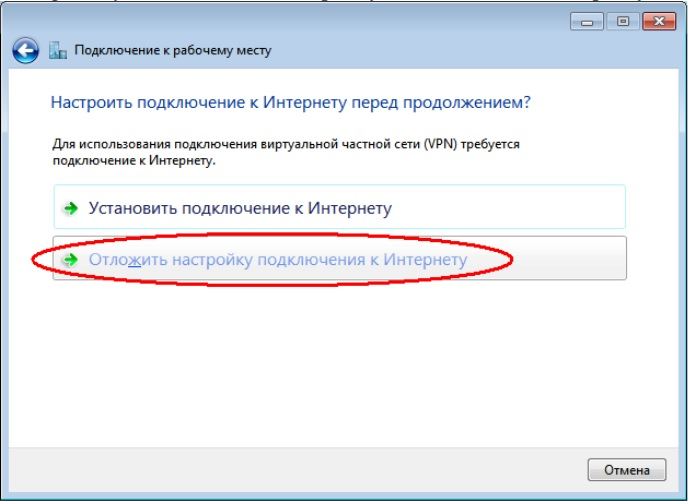
В поле "Интернет-адрес" впишите Шлюз (IP-адрес 192.168.80.1, адрес шлюза указан в памятке абонента), в поле "Имя" место назначения впишите "UyarNet".
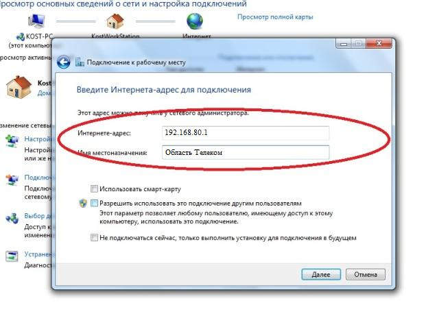
Выберите "Не подключать сейчас", нажмите "Далее"
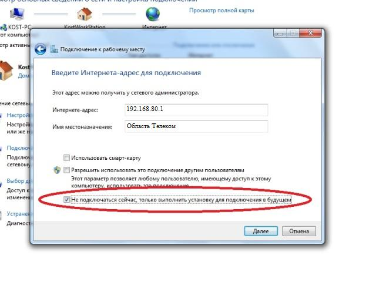
В поле "Пользователь" введите ваш VPN-логин, в поле "Пароль" - ваш VPN-пароль, поставьте галку "Запомнить этот пароль". (VPN-логин и VPN-пароль написаны в памятке абонента). Нажмите "Создать"
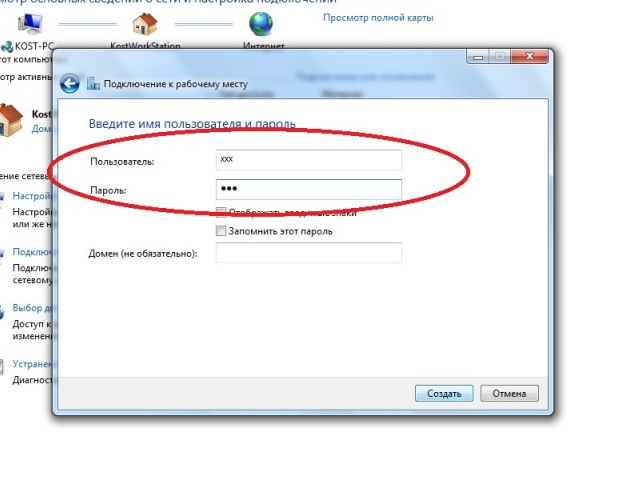
Нажмите "Закрыть"
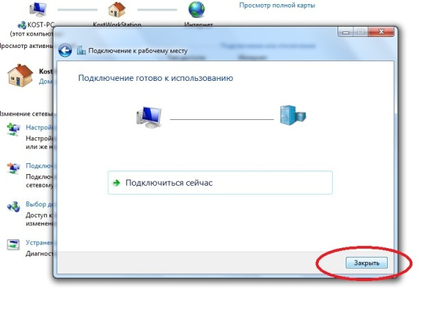
В Центре управления сетями и общим доступом нажмите "Изменение параметров адаптера".
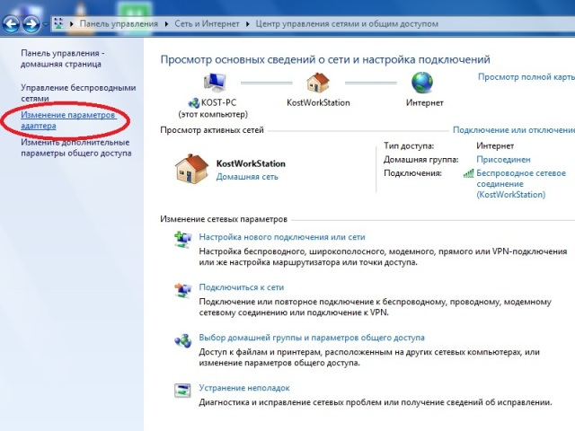
Нажмите правой кнопкой мыши на значок "UyarNet", в контекстном меню выберите "Свойства".
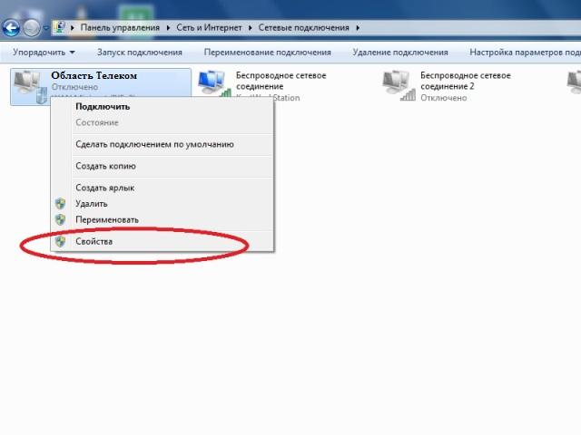
Перейдите на вкладку "Безопасность". В поле "Шифрование данных" выберите "Необязательное (подключаться даже без шифрования)". Нажмите "ОК"
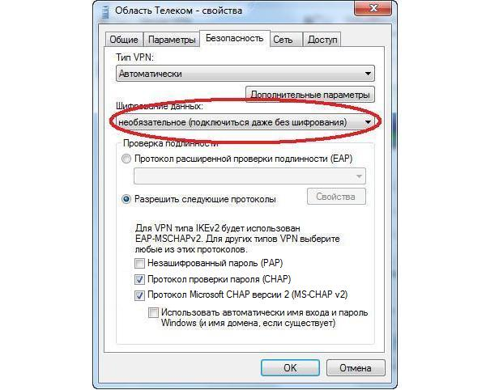
Нажмите правой кнопкой мыши на значок "UyarNet", в контекстном меню выберите "Подключить".
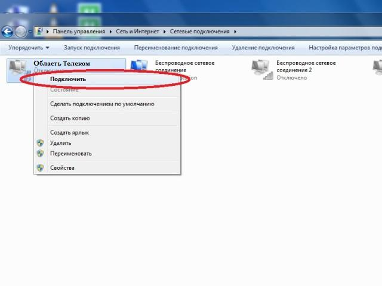
Нажмите "подключение"
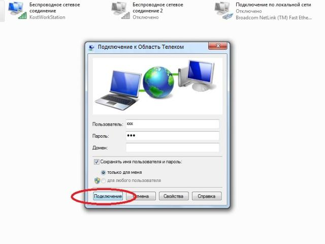
Если все предыдущие шаги были выполнены верно, подключение установится, после чего вы можете пользоваться Интернетом.